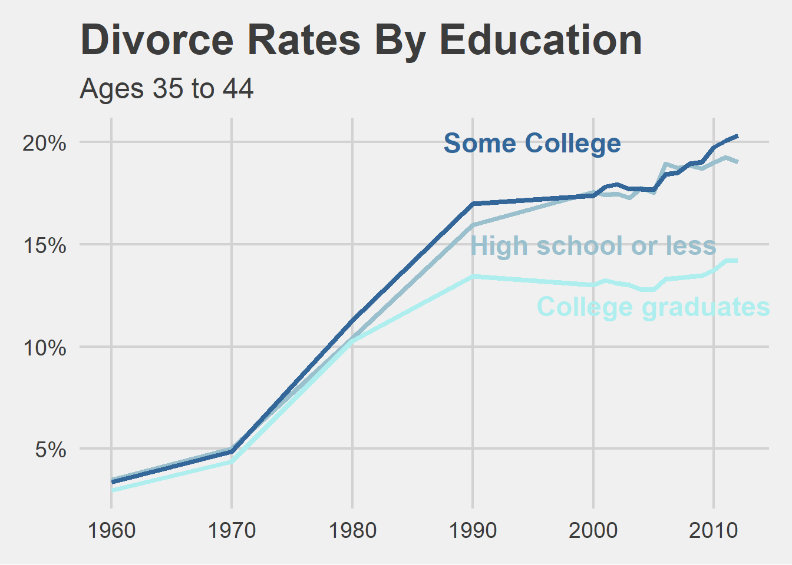

Warning: package 'dslabs' was built under R version 4.2.2
library(here)
Warning: package 'here' was built under R version 4.2.2
here() starts at C:/Users/Raquel/GitHub/MADA/RaquelFrancisco-MADA-portfolio
library(plotly)
Warning: package 'plotly' was built under R version 4.2.2
Attaching package: 'plotly'
The following object is masked from 'package:ggplot2':
last_plot
The following object is masked from 'package:stats':
filter
The following object is masked from 'package:graphics':
layout
library(ggthemes)
Warning: package 'ggthemes' was built under R version 4.2.2
#import file via relative path#raw_bothsexes <- read_csv(here('Visualization_Exercise/raw_data/both_sexes.csv'))raw_divorce <-read_csv(here('Visualization_Exercise/raw_data/divorce.csv'))
New names:
Rows: 17 Columns: 21
── Column specification
──────────────────────────────────────────────────────── Delimiter: "," dbl
(20): ...1, year, all_3544, HS_3544, SC_3544, BAp_3544, BAo_3544, GD_35... date
(1): date
ℹ Use `spec()` to retrieve the full column specification for this data. ℹ
Specify the column types or set `show_col_types = FALSE` to quiet this message.
• `` -> `...1`
Cleaning data to build the: “Divorce Rates by Education”
Variables will be:
Highschool or Less
HS | High school graduate or less (EDUCD < 65)
Some college
SC | Some college (EDUCD >= 65 & <= 100)
College graduate
BAp | Bachelor’s degree or more (EDUCD > 100) BAo | Bachelor’s degree, no graduate degre (EDUCD > 100 & <= 113) GD | Graduate degree (EDUCD > 113)
Goal is to have an X- Axis of “Year (Decade)” and a Y-Axis of “% of Divorce with Education” of only ages 35 to 44
clean_Div <- raw_divorce %>%select('year', 'HS_3544', 'SC_3544', 'BAp_3544', 'BAo_3544', 'GD_3544')clean_Div$Graduate <-rowMeans(clean_Div[, c(3:5)], na.rm=TRUE)#I made the exective decision to get an average of this data because this would be what would me most reminiscent of the original graph. It looks exactly the same as there's after visualization.clean_Div <-rename(clean_Div, SomeCollege = SC_3544)clean_Div <-rename(clean_Div, Highschool = HS_3544)clean_Div <-rename(clean_Div, Year = year)Div_3345 <- clean_Div %>%select('Year','Highschool', 'SomeCollege', 'Graduate')
Start Plotting
main <-ggplot(data = Div_3345) +geom_line(aes(x = Year, y = Highschool), color ='lightblue3', size=1.5) +geom_line(aes(x = Year, y = Graduate), color ="paleturquoise", size=1.5) +geom_line(aes(x = Year, y = SomeCollege), color ='#336699', size=1.5) +xlab("") +ylab("") +ggtitle("Divorce Rates By Education", subtitle ="Ages 35 to 44") +scale_color_fivethirtyeight() +theme_fivethirtyeight(base_size =18, base_family ="sans") +scale_y_continuous(labels = scales::percent_format(accuracy =1)) +annotate(geom="text", x=1995, y=.2, label="Some College", colour="#336699",size=6, family="sans", fontface="bold", angle=0) +annotate(geom="text", x=2000, y=.15, label="High school or less", colour="lightblue3",size=6, family="sans", fontface="bold", angle=0) +annotate(geom="text", x=2005, y=.12, label="College graduates", colour="paleturquoise",size=6, family="sans", fontface="bold", angle=0)
Warning: Using `size` aesthetic for lines was deprecated in ggplot2 3.4.0.
ℹ Please use `linewidth` instead.
#My biggest issue with this graph is I cannot figure out how they added the labels for each education level with black with lines pointing to each trendline. Is it possible that they did this in lightroom after? To compensate, I made the labels "float" near the lines and made their color match.main

##ggthemes had a theme called 'fivethirtyeight' that was very close to what is seen in the original plot. It was found here: https://yutannihilation.github.io/allYourFigureAreBelongToUs/ggthemes/theme_fivethirtyeight/
Explore Plotly
ggplotly(maintooltip =c("text"))
Warning: plotly.js does not (yet) support horizontal legend items
You can track progress here:
https://github.com/plotly/plotly.js/issues/53
two <-plotly_build(main)
Warning: plotly.js does not (yet) support horizontal legend items
You can track progress here:
https://github.com/plotly/plotly.js/issues/53